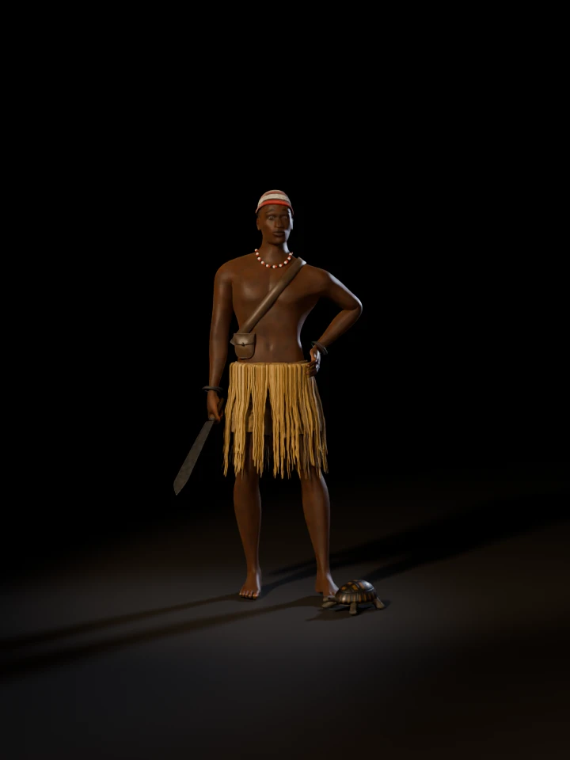

Igbo alụsị of bargains and the tortoise
Ekwensu of the Bargain
A photoreal study of the alụsị of bargains at dusk in a market square: short trousers of raffia cloth under a raffia fringe, the striped okpu agụ of a warrior, a machete in one hand and the other on his hip, and a tortoise at his feet under a young moon.
- Alụsị of
- Bargains and the tortoise
- Invoked
- For guidance in difficult trading
- His cap
- Black, white and red
- Once honoured
- Among the benevolent lunar deities
![A lean dark-skinned man stands barefoot in an empty market square at dusk, bare-chested, in a knitted cap striped red, black and white, a fringe of straw-coloured raffia over short trousers of woven raffia, and a strand of black, white and red beads. A leather strap crosses his chest to a small pouch at his hip. He holds a broad machete low in his right hand and rests his left hand on his hip. A tortoise walks past his left foot beside a clay lamp burning on the ground. Behind him stand thatched stalls with pots, baskets and small lamps on their tables, oil palms against a violet twilight, and a thin crescent moon.](img/hero.webp)
Turn him round
Drag across the figure, use the slider, or focus it and press the arrow keys. Thirty-six views, ten degrees apart, rendered under the same lights as the other figures while he and his tortoise turn.

Loading views 0 / 36
- 0°
The strap from his left shoulder to the pouch at his right hip, the strand of beads, the machete low in his right hand, and the tortoise by his left foot.
- 90°
The machete angled forward from his fist, two iron bangles above it, and the fringe falling over the trousers.
- 180°
The strap crossing his back, the twisted cord the fringe hangs from, and the cap coming down over the back of his head.
- 270°
His hand on his hip over the fringe, the cap at its lowest over his left ear, and the tortoise at his feet.
Close up
Select a picture to see it at full size.
A trader's face
Imagined · the sources do not describe him
No source used here says how Ekwensu looks. He is crafty at trade and negotiation, so he is drawn as a lean man of about thirty with a half-smile, his head turned a little, weighing you up. The cap follows his gallery figure.
Source: Wikipedia: Ekwensu
Okpu agụ
Knitted wool · black, white and red
The leopard cap of bravery, tied to Ohafia warrior traditions: a round, slanting cap of knitted wool. Its black and white recall the leopard; the red was reserved for warriors who had taken heads in battle or brought home a strong animal such as a leopard. The order of the bands and the leopard's rings on the white are the study's.
The machete
Iron · about 55 cm
Ekwensu was a war god who guided warriors in battle, and his gallery figure carries a machete. This one is broad, its spine dropping to a clipped point, the flats dark and the edge bright from the stone. Its shape is the study's own.
Source: Wikipedia: Ekwensu
Hand on the hip
Iron bangles · two on each wrist
As on his gallery figure, one hand rests on his hip and two forged iron rings sit on each wrist. The hand was placed on the cloth over his flank, measured on the posed body, so the strands of the fringe pass under it.
Raffia over raffia cloth
Raffia fringe · woven raffia
Raffia was among the traditional weaving fibres, and coarse raffia cloth was used for masquerades, warrior garb and ceremonial dress. He wears short trousers of it under a fringe of dry raffia, as his gallery figure does. The weave and its brown stripes are the study's.
Source: Wikipedia: Akwete cloth
Beads and strap
Glass beads · leather
One strand of black, white and red beads, the colours of his cap, and a leather strap over his left shoulder, both from his gallery figure. The strap lies taut across his chest, and a small pouch hangs from it in front of his right hip, its flap closed with a horn toggle.
Mbe
The tortoise · his creature
Wikipedia calls Ekwensu the alụsị of the tortoise as well as of bargains, and his gallery figure keeps one at his feet. It is drawn as a hinge-back tortoise of the West African forest and farmland, walking. Its form is the study's own.
Source: Wikipedia: Ekwensu
The market at dusk
Thatched stalls · palm-oil lamps · a young moon
He is invoked in difficult bargains and was once honoured among the benevolent lunar deities, so he stands in a market square as it empties at dusk, under a crescent moon. The square, its stalls and wares, the oil palms and the hour are the study's own.
Source: Wikipedia: Ekwensu
What is sourced, what is imagined
None of the sources used here describes how Ekwensu looks. What he wears follows his gallery figure and what the sources say of Igbo warrior dress, so this figure is an interpretation, not a cult image. This list keeps the two apart.
From the sources
- The alụsị of bargains and of the tortoise, a trickster crafty at trade and negotiation. Wikipedia: Ekwensu
- Called on in difficult trading, for guidance in hard mercantile situations. Wikipedia: Ekwensu
- A war god who guided warriors in battle. Wikipedia: Ekwensu
- Once highly honoured as one of the benevolent lunar deities. Wikipedia: Ekwensu
- The okpu agụ, the knitted, slanting leopard cap of bravery, striped black, white and red, its red reserved for proven warriors. Wikipedia: Igbo regalia and headdresses
- Raffia among the traditional weaving fibres, its coarse cloth used for masquerades, warrior garb and ceremonial dress. Wikipedia: Akwete cloth
This study’s choices
- His face, age and build. None of the sources used here describes how he looks.
- Following his gallery figure: the raffia trousers and fringe, the cap, the beads, the strap, the iron bangles, the machete, his hand on his hip and the tortoise at his feet.
- The cap's fit and bands, the weave and stripes of the raffia cloth, and the cut of the trousers.
- The machete's shape and the pouch on the strap.
- The tortoise, drawn as a West African hinge-back, walking.
- The market and the hour: the stalls, wares and palm-oil lamps, the oil palms, the dusk and the young moon, drawn about four times its true size so that it reads.
- Where sources differ. Wikipedia gives two figures: the alụsị of the trader and the warrior, honoured among the benevolent lunar deities, and a spirit of violence. It says that with Christianity his more beneficent aspects were supplanted by missionaries who came to represent him as Satan. This study draws the older figure.
How he was made
The body starts from MakeHuman’s free base mesh, shaped as a lean man and rigged. His left hand is set on the cloth over his flank, measured on the posed body. His right hand was solved to the machete’s handle: each finger closes at all three joints until it rests on the wood.
The trousers are cut from the body and simulated while a drawstring draws the waist in, so their gathers form on their own; their raffia cloth is a woven pattern of flat fibres, each its own shade of straw. The fringe’s strips fold over a twisted cord and fall the way a fringe hangs from the hips, crinkled as dry raffia is.
The cap is a surface lifted off the skull, its lower edge set by angle round the head, with the knit in its material. The strap lies where a plane from his left shoulder to his right side cuts the body, pulled taut. The tortoise is a set of metaballs joined into one skin under a painted shell, and the sky is Blender’s physical sky with the sun just below the horizon.
Every stage is a Python script in 3d/ekwensu/blender/, using the toolkit in 3d/toolkit/, and the finished scene is 3d/ekwensu/ekwensu.blend.
| Trousers cloth, simulated vertices | 12,380 |
|---|---|
| Simulated frames | 100 |
| Body mesh vertices, before smoothing | 13,380 |
| Raffia strips in the fringe | 300 |
| Hair curves below the cap | 6,028 |
| Beads on the strand | 54 |
| Iron bangles | 4 |
| Thatch strands on the stalls' eaves | 14,920 |
| Oil palms | 26 |
| Samples per pixel, stills / turntable | 96 / 32 |
Sources
- Wikipedia: Ekwensu. The alụsị of bargains and the tortoise, invoked in difficult mercantile situations; the war god who guided warriors; once honoured among the benevolent lunar deities; recast by missionaries as Satan.
- Wikipedia: Igbo regalia and headdresses. The okpu agụ, the knitted, slanting leopard cap of bravery, its stripes and the meaning of its red.
- Wikipedia: Akwete cloth. Raffia among the traditional fibres, and coarse raffia cloth for masquerades, warrior garb and ceremonial dress.
- MakeHuman Community: MPFB2. The CC0 base mesh, targets and rig used for the body.